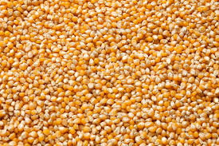

|
|
|||
| Accueil | Transformation | Contact | Idées et Débats |
|
Le mil est une céréale de la famille des poacées, tribu des panicées. Egalement appelé mil perlé, petit mil, mil à chandelle (Pennisetum glaucum (L), R. B2), il existe sous plusieurs formes dont la plus cultivée est le mil pénicillaire. Le terme « mil » regroupe un ensemble de graminées alimentaires qui ont pour caractéristiques communes la petitesse de leurs graines. Ces céréales sont surtout cultivées sur les terres marginales dans les régions sèches des zones tempérées, subtropicales et tropicales. |
Exclusivement cultivé par les familles de la vallée, le riz Terral s’engage pour une agriculture inclusive, en favorisant la consommation de ce que nos familles produisent. Un riz réputé pour sa qualité compte tenu de sa propreté, son goût, sa blancheur et son triage. Il garantit ainsi à ses consommateurs une bonne digestion et une cuisson facile. Le riz Terral est produit par la Société sénégalaise des filières alimentaires. La SFA participe ainsi à la valorisation de la production locale, en s’appuyant sur les ressources et compétences du pays. |  Hybrides de maïs adaptés aux régions chaudes Notre excellente connaissance des conditions de culture d'une part, et la conduite d'essais spécifiques d'autres part, nous permettent de vendre des variétés de maïs parfaitement adaptées aux impératifs techniques et économiques des producteurs. • Pour le maïs grain, le choix de la variété dépend à la fois des besoins hydriques de la plante (liés au rendement potentiel) et de la disponibilité en eau. Nous préconisons l'emploi des variétés suivantes : - variétés demi-tardives Panama et Odeon (également adaptées à la production d'ensilage), - variété tardive Net, - variétés très tardives Nikaïa et Mas 61, toutes deux également adaptées à la production de fourrage. • En ce qui concerne le maïs fourrage, le choix variétal doit également tenir compte de la qualité de l'aliment final. Si la production de lait revêt une importance primordiale dans le système d'exploitation, nous vous proposerons des variétés productives pourvues de valeur nutritionnelles exceptionnelles. - variété demi-tardive Odeon, - variétés très tardives Nikaïa et Giubileo, - variétés extrèmement tardives Calcio ou Mas 74.G. |
||
|---|---|---|---|---|